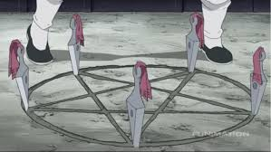

Alkahestria
La Alkahestría es una forma de alquimia proveniente de Xing que se enfoca en sanar, comprender el flujo natural de energía y mantener el equilibrio. A diferencia de la alquimia de Amestris, no depende del sacrificio de almas ni del flujo tectónico, lo que la hace una herramienta espiritual y científica más limpia y profundamente conectada con la naturaleza.
Origen de la alkahestria
En Xing, la alquimia tradicional no se desarrolló de forma centralizada como en Amestris. En su lugar, surgieron varias escuelas de pensamiento, dirigidas por los distintos clanes que conforman el país. Entre estos clanes, la práctica de la Alkahestría se convirtió en una herencia cultural transmitida de generación en generación.
Los antiguos sabios de Xing observaron los flujos de energía naturales que recorren la tierra (conocidos como el "Pulso del Dragón") y crearon métodos para aprovechar esa energía con fines médicos y espirituales. También incorporaron conocimientos astrológicos, medicinales y filosóficos, fusionando saberes científicos y místicos.
Influencian en la medicina
La Alkahestría se convirtió en una herramienta fundamental para el desarrollo de la medicina en Xing. Gracias a su capacidad para detectar y restaurar desequilibrios energéticos en el cuerpo, los alkahestristas eran considerados médicos espirituales. Su uso se extendió tanto entre la nobleza como entre el pueblo, y fue uno de los pilares del conocimiento del país.
Contacto con Amestris
La historia de la Alkahestría cobra relevancia en la trama de Fullmetal Alchemist: Brotherhood cuando May Chang, una joven princesa del Clan Chang, viaja a Amestris en busca del secreto de la inmortalidad: la Piedra Filosofal. Ella lleva consigo sus conocimientos de Alkahestría y termina ayudando a los hermanos Elric a descubrir la verdadera fuente de energía que usan los alquimistas de Amestris (el sacrificio de almas humanas), algo que la Alkahestría no utiliza.
Gracias a este contraste, se revela que la Alkahestría obtiene su poder directamente del flujo natural de la tierra y no puede ser bloqueada por Padre, el antagonista que controla la alquimia amestriana desde las sombras.